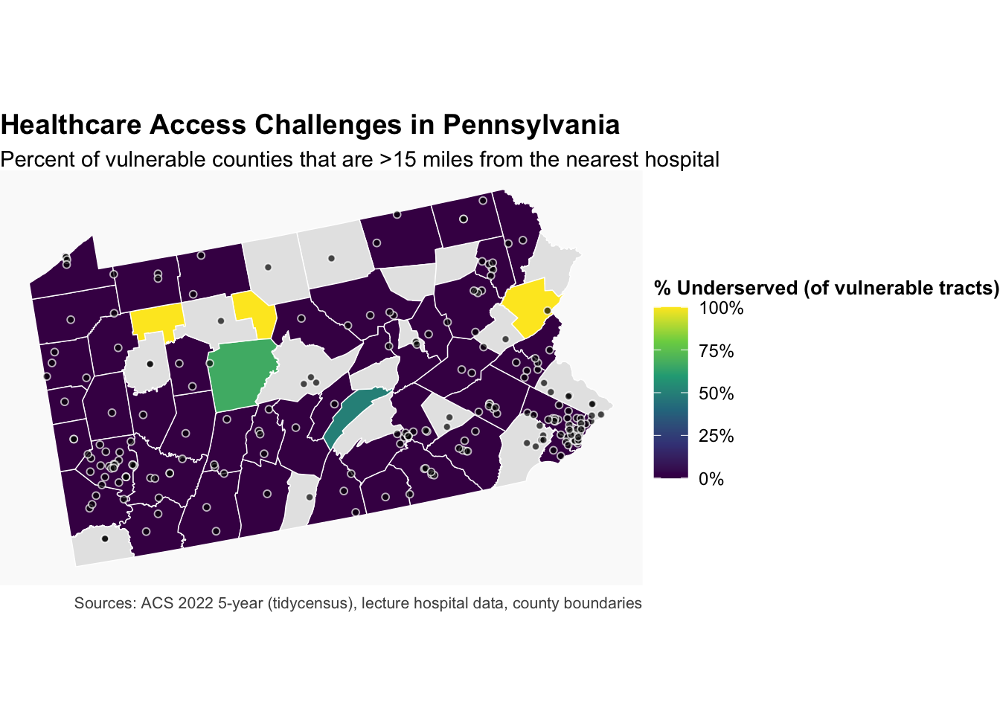
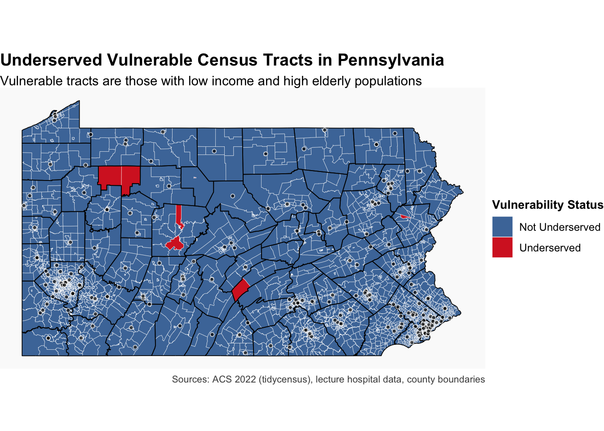

labs( title = “Distance to Nearest Hospital (Vulnerable Tracts)”, x = “Distance (miles)”, y = “Density”, caption = “Most vulnerable tracts are located within 5 miles of the nearest hospital, though a small number of rural tracts face much longer travel distances (up to ~18 miles).” ) + theme_minimal(base_size = 11)
---
## So What / Policy Implications
This analysis identifies specific tracts and counties where elderly, low-income residents face significantly longer travel times to the nearest hospital. Practical actions decision-makers can take:
- Short term (operations): deploy mobile clinics or telehealth outreach to the small number of high-priority tracts identified in the ranking table; coordinate ride-share or non-emergency medical transport for residents in tracts >15 miles from a hospital.
- Medium term (investment): prioritize facility siting, grant funding, or satellite clinic incentives in counties with high percent-underserved and nontrivial vulnerable populations (e.g., Cameron, Forest, Clearfield).
- Policy & evaluation: use the provided county priority table and maps as inputs for grant applications, and track changes over time by repeating this analysis annually to evaluate whether interventions reduce average travel times.
## Critical Reflection — Findings and Next Steps
发现了什么问题:
- 数据限制：ACS 5-year estimates introduce sampling variability (MOEs) in small rural tracts; hospital dataset lacks provider capacity (beds/ED throughput) so distance is a proxy, not a direct measure of service availability.
- 方法限制：使用区 centroid 到最近医院的直线/投影距离忽略了道路网络、交通时段和跨界就诊行为，会低估实际出行时间差异。
如果有更多时间/数据我会怎么做:
- 集成医院运力或就诊量数据（如 CMS/州级住院记录或门诊量）以衡量实际可用服务，而不是仅用地理距离。
- 用道路网络行程时间（考虑高峰/离峰）替代直线距离，并加入事件/天气日历以建模短期可达性波动。
- 扩展为多期分析或使用移动医疗与交通补贴的成本-效益模拟，把可达性改善量化为政策回报率，帮助优先分配有限资金。
---
## Part 3: Own Data Analysis
---
---
## Part 1: Healthcare Access for Vulnerable Populations
### Introduction — Problem and Audience
This analysis is written for state and county public health officials, hospital network planners, and nonprofit organizations making resource-allocation decisions. The central question is: which communities face the largest barriers to timely hospital access, and where should limited funding or mobile services be prioritized to reduce travel time for vulnerable residents? The following analysis quantifies geographic differences in hospital accessibility for elderly and low-income populations and produces county- and tract-level outputs (maps and ranked lists) that decision-makers can use to target investments.
### Analysis approach (brief)
I use ACS demographic estimates merged with spatial hospital locations to identify "vulnerable" census tracts (low income + high elderly share), compute centroid-based travel distances to the nearest hospital, and aggregate results to county level to produce a ranked priority list and maps for policy use.
**Your Task:**
::: {.cell}
```{.r .cell-code}
# Load required packages
library(sf)
Linking to GEOS 3.13.0, GDAL 3.8.5, PROJ 9.5.1; sf_use_s2() is TRUE
Code
library(dplyr)
Attaching package: 'dplyr'
The following objects are masked from 'package:stats':
filter, lag
The following objects are masked from 'package:base':
intersect, setdiff, setequal, union
Code
library(tigris)
To enable caching of data, set `options(tigris_use_cache = TRUE)`
in your R script or .Rprofile.
Code
options(tigris_use_cache =TRUE, tigris_class ="sf")library(tidycensus)library(knitr)library(ggplot2)library(scales)# Load spatial data# counties: shapefile in data/pa_counties <-st_read("data/Pennsylvania_County_Boundaries.shp", quiet =TRUE)# hospitals: GeoJSON in data/hospitals <-st_read("data/hospitals.geojson", quiet =TRUE)# census tracts: from tigriscensus_tracts <-tracts(state ="PA", cb =TRUE, year =2023)# Make CRS consistent with countieshospitals <-st_transform(hospitals, st_crs(pa_counties))census_tracts <-st_transform(census_tracts, st_crs(pa_counties))# Check that all data loaded correctlylist(rows_counties =nrow(pa_counties),rows_hospitals =nrow(hospitals),rows_tracts =nrow(census_tracts),crs_counties =st_crs(pa_counties)$input,crs_hospitals =st_crs(hospitals)$input,crs_tracts =st_crs(census_tracts)$input,geom_counties =unique(st_geometry_type(pa_counties)),geom_hospitals =unique(st_geometry_type(hospitals)),geom_tracts =unique(st_geometry_type(census_tracts)))
There are 223 hospitals in Pennsylvania according to the provided dataset. There are 3,445 census tracts across the state. All three layers (counties, hospitals, tracts) are currently in WGS 84 / Pseudo-Mercator (EPSG:3857). —
Step 2: Get Demographic Data
Code
# Get demographic data from ACS# 1) Set ACS yearacs_year <-2022# most recent 5-year estimates# 2) Variables:# B01003_001 = total population# B19013_001 = median household income# B01001_020 + B01001_021 + B01001_044 + B01001_045 = age 65+ (male + female groups)vars <-c(total_pop ="B01003_001",median_income ="B19013_001",male65_66 ="B01001_020",male67_69 ="B01001_021",male70_74 ="B01001_022",male75_79 ="B01001_023",male80_84 ="B01001_024",male85plus ="B01001_025",female65_66 ="B01001_044",female67_69 ="B01001_045",female70_74 ="B01001_046",female75_79 ="B01001_047",female80_84 ="B01001_048",female85plus="B01001_049")# 3) Pull ACS data at tract level for PApa_demo <-get_acs(geography ="tract",state ="PA",variables = vars,year = acs_year,survey ="acs5",output ="wide")
Getting data from the 2018-2022 5-year ACS
Code
# 4) Compute elderly population (sum male+female 65+)pa_demo <- pa_demo %>%mutate(over65 = male65_66E + male67_69E + male70_74E + male75_79E + male80_84E + male85plusE + female65_66E + female67_69E + female70_74E + female75_79E + female80_84E + female85plusE ) %>%select(GEOID, total_popE, median_incomeE, over65)# 5) Join to tract boundariescensus_tracts_demo <- census_tracts %>%left_join(pa_demo, by ="GEOID")# How many tracts missing income?missing_income <-sum(is.na(census_tracts_demo$median_incomeE))# Median income across all tracts (ignoring missing)overall_median_income <-median(census_tracts_demo$median_incomeE, na.rm =TRUE)list(acs_year_used = acs_year,n_tracts =nrow(census_tracts_demo),missing_income_tracts = missing_income,median_income_all_tracts = overall_median_income)
ACS year used: 2022 (5-year estimates) Number of census tracts in dataset: 3,445 Tracts with missing income data: 62 Median household income across all PA tracts: $70,188 —
I chose $50,000 as the income threshold. This is well below Pennsylvania’s overall tract-level median income of about $70,000. I chose 17% elderly population as the threshold, which is slightly above the national average (~16–17%). There are 524 census tracts in Pennsylvania that meet the vulnerability criteria. About 7.3% of Pennsylvania’s 3,445 census tracts fall into this vulnerable category.
Step 4: Calculate Distance to Hospitals
Code
# Transform to appropriate projected CRScensus_tracts_proj <-st_transform(census_tracts_demo, 5070)hospitals_proj <-st_transform(hospitals, 5070)# Calculate distance from each tract centroid to nearest hospitaltract_centroids <-st_centroid(census_tracts_proj)
Warning: st_centroid assumes attributes are constant over geometries
Min. 1st Qu. Median Mean 3rd Qu. Max.
0.02112 0.83929 1.80589 3.27466 3.55820 18.64307
This projection uses meters as its unit, which avoids distortions from geographic CRS like WGS84 (degrees), so distances can be directly converted to miles.
The average distance is about 3.27 miles. The maximum distance from a vulnerable tract centroid to the nearest hospital is about 18.6 miles. By checking the distance distribution, only a small number of vulnerable tracts (likely fewer than 5) are more than 15 miles away. —
7 tracts meet the definition. 2.8% of vulnerable tracts are undeserved.This result is not very surprising. Most of Pennsylvania’s population—and thus its healthcare infrastructure—is concentrated in urban and suburban counties. Rural areas may have some underserved tracts, but they are relatively few in number.
Cameron (100%) – 1 vulnerable tract, and it is underserved. Forest (100%) – 2 vulnerable tracts, both underserved. Monroe (100%) – 1 vulnerable tract, underserved. Clearfield (66.7%) – 3 vulnerable tracts, 2 underserved. Juniata (50%) – 2 vulnerable tracts, 1 underserved. From the current table, counties like Cameron, Forest, and Clearfield stand out, because although they don’t have many tracts, nearly all of their vulnerable tracts are underserved and the average distance to the nearest hospital is 15–19 miles. Yes. The underserved counties are concentrated in rural and sparsely populated areas (Northern and Central Pennsylvania: Cameron, Forest, Clearfield, Juniata). These counties have few hospitals and residents often face long travel times. —
Step 7: Create Summary Table
Code
# Create and format priority counties tablepriority_counties <- county_stats %>%mutate(`% Underserved`=round(pct_underserved, 1),`Avg Distance (mi)`=round(avg_distance_vuln_mi, 1),`Vulnerable Pop (65+)`=comma(vulnerable_population) ) %>%arrange(desc(`% Underserved`), desc(as.numeric(gsub(",", "", `Vulnerable Pop (65+)`)))) %>%slice(1:10) %>%select(County = COUNTY_NAM,`Vulnerable Tracts`= vulnerable_tracts,`Underserved Tracts`= underserved_tracts,`% Underserved`,`Avg Distance (mi)`,`Vulnerable Pop (65+)` )kable( priority_counties,caption ="Top 10 Pennsylvania Counties with Highest Priority for Healthcare Investment (based on underserved vulnerable tracts and population needs)",align ="lccccc",format ="markdown")
Top 10 Pennsylvania Counties with Highest Priority for Healthcare Investment (based on underserved vulnerable tracts and population needs)
County
Vulnerable Tracts
Underserved Tracts
% Underserved
Avg Distance (mi)
Vulnerable Pop (65+)
FOREST
2
2
100.0
18.3
1,593
CAMERON
1
1
100.0
18.6
428
MONROE
1
1
100.0
17.6
314
CLEARFIELD
3
2
66.7
15.5
2,083
JUNIATA
2
1
50.0
12.6
1,332
PHILADELPHIA
38
0
0.0
1.0
32,275
ALLEGHENY
49
0
0.0
2.2
27,071
WESTMORELAND
14
0
0.0
3.2
8,023
LUZERNE
10
0
0.0
3.2
7,619
FAYETTE
9
0
0.0
3.6
7,158
Part 2: Comprehensive Visualization
Map 1: County-Level Choropleth
Your Task:
Code
# Create detailed tract-level maplibrary(dplyr)library(ggplot2)library(sf)library(scales)pa_counties_map <- pa_counties_proj %>%left_join( county_stats %>%mutate(pct_underserved =as.numeric(pct_underserved)),by =c("COUNTY_NAM") )ggplot() +geom_sf(data = pa_counties_map,aes(fill = pct_underserved),color ="white", size =0.25 ) +geom_sf(data = hospitals_proj,shape =21, fill ="black", color ="white", size =1.4, alpha =0.7 ) +scale_fill_viridis_c(name ="% Underserved (of vulnerable tracts)",labels =function(x) paste0(x, "%"),na.value ="grey90",option ="-magma",limits =c(0, 100) ) +labs(title ="Healthcare Access Challenges in Pennsylvania",subtitle ="Percent of vulnerable counties that are >15 miles from the nearest hospital",caption ="Sources: ACS 2022 5-year (tidycensus), lecture hospital data, county boundaries" ) +theme_void() +theme(legend.position ="right",legend.title =element_text(size =10, face ="bold"),legend.text =element_text(size =9),plot.title =element_text(size =14, face ="bold"),plot.subtitle=element_text(size =11),plot.caption =element_text(size =8, color ="grey30"),panel.background =element_rect(fill ="grey98", color =NA) )
Warning in viridisLite::viridis(n, alpha, begin, end, direction, option):
Option '-magma' does not exist. Defaulting to 'viridis'.

Requirements: - Fill counties by percentage of vulnerable tracts that are underserved - Include hospital locations as points - Use an appropriate color scheme - Include clear title, subtitle, and caption - Use theme_void() or similar clean theme - Add a legend with formatted labels
Map 2: Detailed Vulnerability Map
Code
tracts_final <- census_tracts_demo %>%left_join( tract_centroids %>%st_drop_geometry() %>%select(GEOID, nearest_hosp_dist_mi, vulnerable, underserved),by ="GEOID" )ggplot() +geom_sf(data = tracts_final,aes(fill =factor(underserved, levels =c(0, 1), labels =c("Not Underserved", "Underserved"))),color ="white", size =0.1 ) +geom_sf(data = pa_counties_proj,fill =NA, color ="black", size =0.3 ) +geom_sf(data = hospitals_proj,shape =21, fill ="black", color ="white", size =1.2, alpha =0.7 ) +scale_fill_manual(name ="Vulnerability Status",values =c("Not Underserved"="#4C78A8", "Underserved"="#D62728"),na.value ="grey90" ) +labs(title ="Underserved Vulnerable Census Tracts in Pennsylvania",subtitle ="Vulnerable tracts are those with low income and high elderly populations",caption ="Sources: ACS 2022 (tidycensus), lecture hospital data, county boundaries" ) +theme_void() +theme(legend.position ="right",legend.title =element_text(size =10, face ="bold"),legend.text =element_text(size =9),plot.title =element_text(size =14, face ="bold"),plot.subtitle=element_text(size =11),plot.caption =element_text(size =8, color ="grey30"),panel.background =element_rect(fill ="grey98", color =NA) )

Chart: Distribution Analysis
Create a visualization showing the distribution of distances to hospitals for vulnerable populations.
Code
# Create distribution visualizationvuln <- tract_centroids %>%st_drop_geometry() %>%filter(vulnerable ==1)ggplot(vuln, aes(x = nearest_hosp_dist_mi)) +geom_histogram(aes(y =after_stat(density)), bins =30, fill ="#4C78A8", color ="white", alpha =0.9) +geom_density(linewidth =1) +labs(title ="Distance to Nearest Hospital (Vulnerable Tracts)",x ="Distance (miles)",y ="Density",caption ="Most vulnerable tracts are located within 5 miles of the nearest hospital, though a small number of rural tracts face much longer travel distances (up to ~18 miles)." ) +theme_minimal(base_size =11)
Schools (School Facilities) – Philadelphia. I chose it to assess educational access equity. School locations allow tract-level coverage analysis and policy-relevant siting insights.
Source: OpenDataPhilly, “School Facilities” (GeoJSON). Date: Retrieved for this assignment (documented in code and file list). The layer is maintained by the City of Philadelphia Department of Planning and Development.
495 features in the loaded file.
The file opened in a geographic CRS (WGS 84). I transformed it to EPSG:2272 (NAD83 / Pennsylvania South ftUS) to support feet/miles buffers and area calculations appropriate for Philadelphia. —
Pose a research question
Which Philadelphia census tracts with high numbers of school-age children lack walk access (0.5-mile) to an elementary school, and therefore warrant priority investment?
Conduct spatial analysis
Use at least TWO spatial operations to answer your research question.
I run all operations in EPSG:2272 (NAD83 / Pennsylvania South ftUS). This StatePlane system minimizes distortion over Philadelphia and uses feet, which fits walk buffers and area calculations in miles/feet. The city publishes many layers in this CRS, so joins stay precise and distances do not inherit Web-Mercator scale errors.
Why a 0.25-mile threshold for younger students?
0.25 mile ≈ 1,320 ft ≈ a 5-minute walk at ~3 mph (3 mi/hr → 264 ft/min; 5 min → 1,320 ft). A five-minute target reflects comfort and supervision needs for younger children. Elementary pupils often walk more slowly, face more frequent stops, and require safer crossings. A 0.25-mile standard sets a conservative, child-appropriate access goal; 0.5 mile remains a reasonable secondary benchmark for older students and caregivers.
The map shows high elementary walk access across the urban core. Coverage drops at the edges of the city and in a few industrial or low-density tracts. With a 0.5-mile buffer, only a small share of tracts qualify as “deserts,” and most do not have large child populations. A stricter 0.25-mile buffer reveals more low-coverage tracts and brings a few high-child-count areas (42101034802 and 42101009300) into view. These priority tracts warrant near-term attention through safe-routes upgrades, school siting adjustments, or co-located youth services.
Finally - A few comments about your incorporation of feedback!
After the first assignment, I focused on making my analysis more structured and easier to read. I reorganized the Markdown file by grouping related visuals and adding short introductory sentences before each figure to explain its purpose.